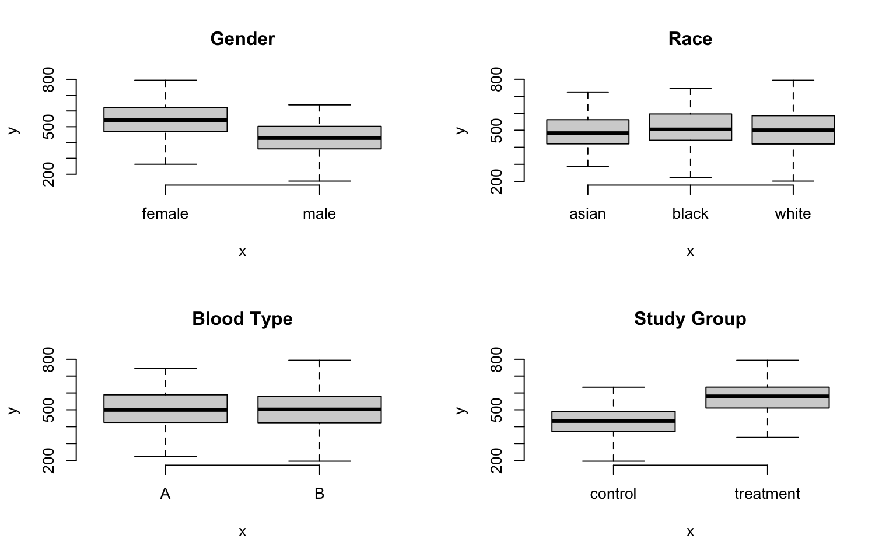
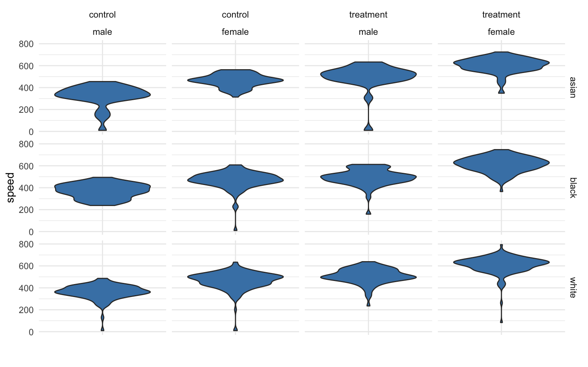
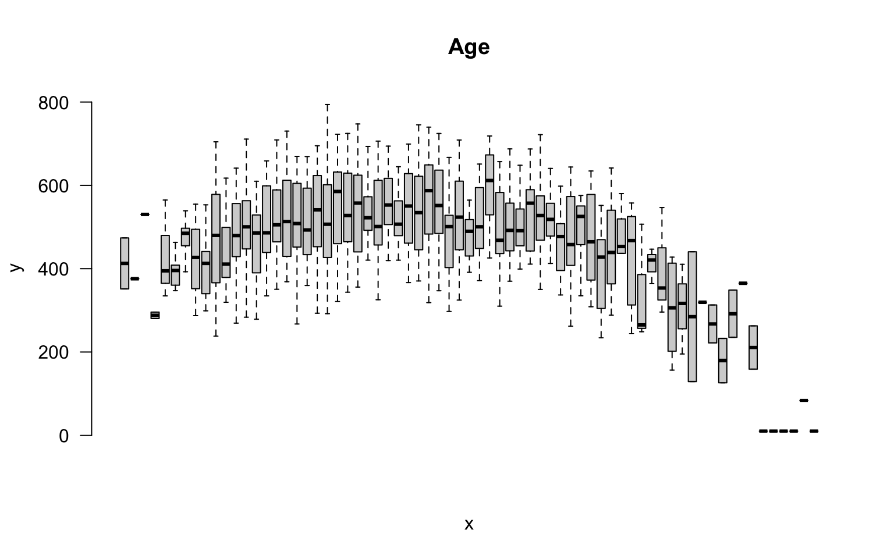
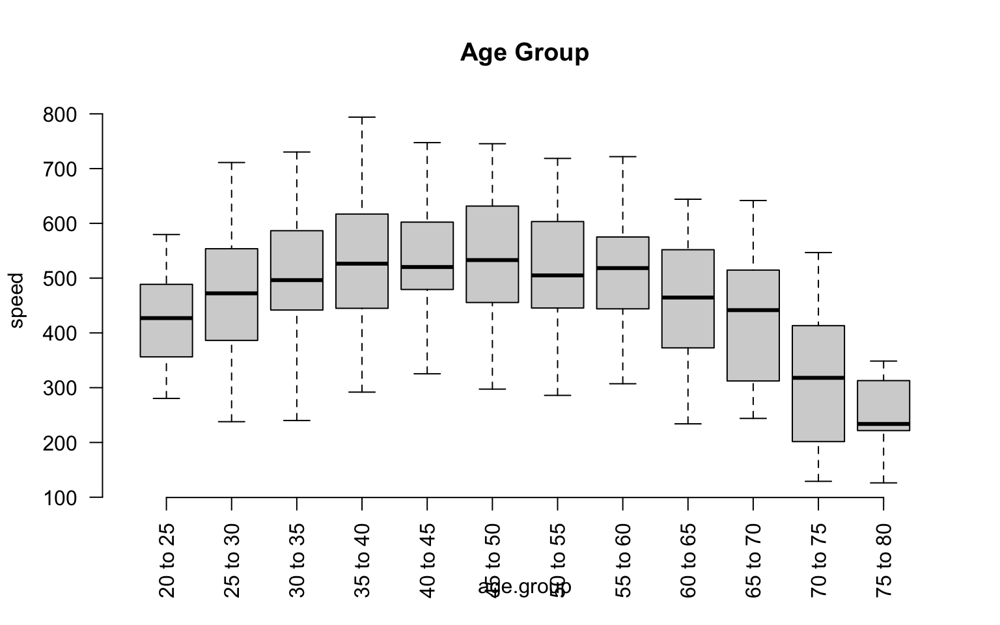
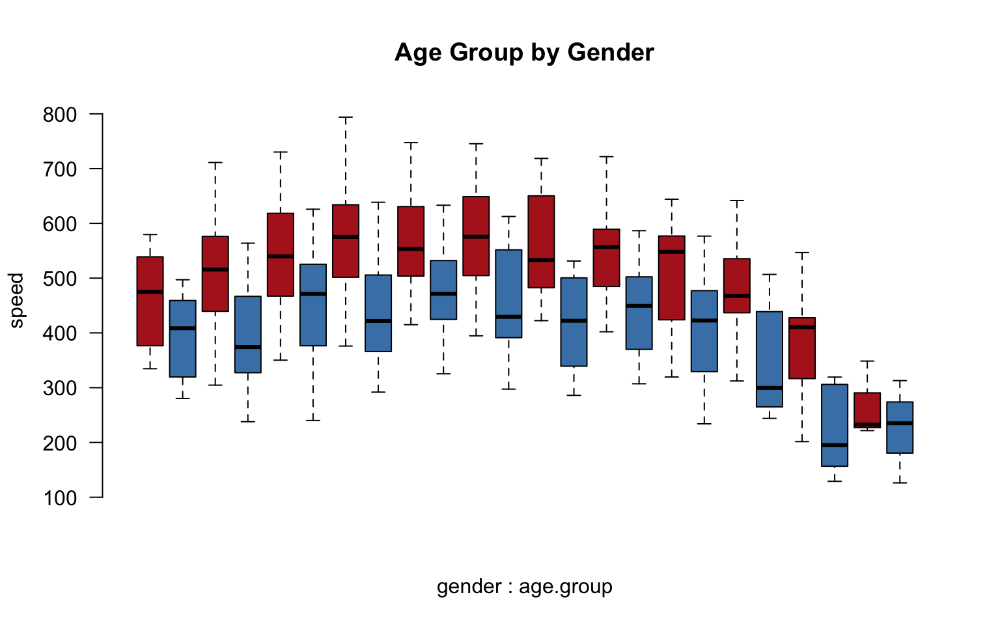

The two most important skills as you first learn a data programming language are:
This lecture focuses on efficiently splitting your data into groups, and then analyzing your data by group.
What Are Groups?
A group represents a set of elements with identical characteristics - mice all belong to one group and elephants belong to another. Easy enough, right?
In data analysis, it is a little more complicated because a group is defined by a set of features. Each group still represents a set of elements with identical characteristics, but when we have multiple features there is a unique group for each combination of features.
The simple way to think about this is that the cross-tab of features generates a grid (table), and each cell represents a unique group:
We might be interested in simple groups (treatment cases versus control cases) or complex groups (does the treatment effect women and men differently?).
In previous lectures you have learned to identify a group with a logical statement and analyze that group discretely.
mean( speed[ study.group == "treatment" & gender=="female" ] )
## [1] 608.336
In this lecture you will learn to define a group structure, then analyze all of your data using that structure.
tapply( speed, INDEX = list( study.group, gender ), FUN = mean )
| control |
465 |
358 |
| treatment |
608.3 |
500.6 |
Main Take-Away
R has been designed to do efficient data analysis by defining a group structure, then quickly applying a function to all unique members.

The base R packages do this with a set of functions in the apply() family. The tapply() function allows you to specify an outcome to analyze and a group, then ask for results from a function.
tapply( X=speed, INDEX=list( study.group, gender ), FUN=mean )
| control |
465 |
358 |
| treatment |
608.3 |
500.6 |
The dplyr package makes this process easier using some simple verbs and the “pipe” operator.
dat %>% group_by( study.group, gender ) %>% summarize( ave.speed = mean(speed) )
| control |
male |
358 |
| control |
female |
465 |
| treatment |
male |
500.6 |
| treatment |
female |
608.3 |
Example
Let’s think about a study looking at reading speed. The treatment is a workshop that teaches some speed-reading techniques. In this study we have data on:
- gender (male, female)
- race (black, white, asian)
- blood.type (A, B)
- age (from 18 to 93)
Examining descriptive statistics we can see that reading speed varies by gender and the treatment group, but not by race or blood type:

The question is, how many unique groups can we create with these four factors?
Each individual factor contains a small number of levels (only 2 or 3 in this case), which makes the group structure look deceptively simple at first glance. When we start to examine combinations of factors we see that group structure can get complicated pretty quickly.
If we look at gender alone, we have two levels: male and female. So we have two groups. If we look at our study groups alone we have two groups: treatment and control.
If we look at gender and the study groups together, we now have a 2 x 2 grid, or four unique groups.
If the race factor has three levels, how many unique groups will we have considering the study design, gender, and race together?

We can calculate the size of the grid by multiplying number of levels for each factor. We see here we have 12 unique groups:
nlevels( gender ) * nlevels( study.group ) * nlevels( race )
## [1] 12
If we add blood type, a factor with two levels (A and B), we now have 24 unique groups:
p + facet_grid( race + study.group ~ gender + blood.type)
What about age? It is a continuous variable, so it’s a little more tricky.
We can certainly analyze the relationship between age and speed using correlation tools.
plot( age, speed, bty="n", main="Age" )
But we can also incorporate this independent variable into a group structure. We can treat each distinct age as a separate group. The ages in this study range from 18 to 93, so we have 65 distinct ages represented.
plot( factor(age), speed, las=2, frame.plot=F, outline=F, main="Age", xaxt="n" )

If we think about the overall group structure, then, we have unique groups defined by gender, race, blood type, and study design, and another 65 age groups. So in total we now have 24 x 65 = 1,560 groups! That is getting complicated.
This group design is problematic for two reasons. From a pragmatic standpoint, we can’t report results from 1,500 groups in a table. From a more substantive perspective, although we have 1,500 distinct cells in our grid, many may not include observations that represent the unique combination of all factors. So this group design is not very practical.
A similar problem arises if our data includes time. If our data includes the time of events recorded by hours, days of the week, months, and years, we can have complicated group structures if we try to analyze every unique combination.
We can simplify our analysis by thinking about age ranges instead of ages, or in other words by binning our continuous data. If we split it into five-year ranges, for example, we have gone from 65 distinct ages to 12 distinct age groups.
age.group <- cut( age,
breaks=seq(from=20,to=80,by=5),
labels=paste( seq(from=20,to=75,by=5),
"to", seq(from=25,to=80,by=5) ) )
group.structure <- formula( speed ~ age.group )
boxplot( group.structure, las=2, frame.plot=F, outline=F, main="Age Group" )

We have now simplified our analysis from 1,560 to 288 possible groups. Combinations of groups will also be easier:
group.structure <- formula( speed ~ gender * age.group )
boxplot( group.structure,
las=2, frame.plot=F, outline=F, main="Age Group by Gender",
col=c("firebrick","steelblue"), xaxt="n" )
